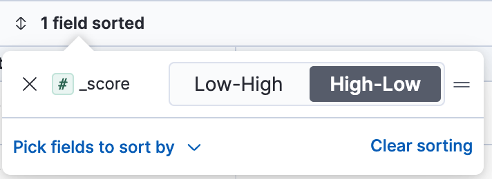
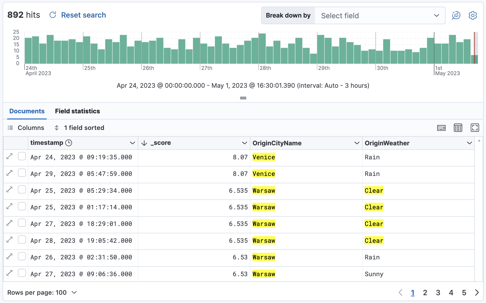

Search for relevance
editElasticsearch assigns a relevancy, or score to each document, so you can can narrow your search to the documents with the most relevant results. The higher the score, the better it matches your query.
This example shows how to use Discover to list your documents from most relevant to least relevant. This example uses the sample flights data set, or you can use your own data.
-
In Discover, open the data view dropdown, and select the data that you want to work with.
For the sample flights data, set the data view to Kibana Sample Data Flights.
-
Run your search. For the sample data, try:
Warsaw OR Venice OR Clear
- If you don’t see any results, expand the time range, for example to Last 7 days.
-
From the list of Meta fields list in the sidebar, add
_score. -
Add any other fields you want to the document table.
At this point, you’re sorting by the`timestamp` field.
-
To turn off sorting by the
timestampfield, click the field sorted option, and then click Clear sorting. - Open the Pick fields to sort by menu, and then click _score.
-
Select High-Low.
Your table now sorts documents from most to least relevant.
